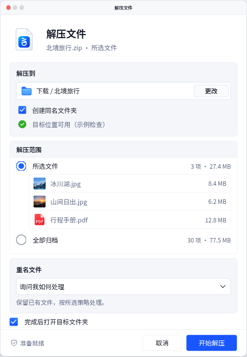
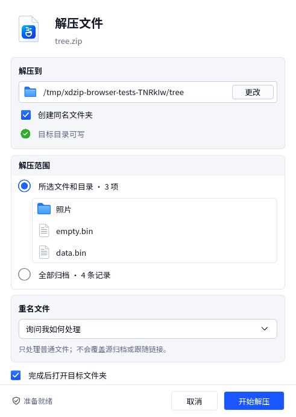

<!doctype html>
<html lang="zh-CN">
<meta charset="utf-8">
<meta name="viewport" content="width=device-width,initial-scale=1">
<title>xdzip — 解压目标对齐修订</title>
<style>
*{box-sizing:border-box}body{margin:0;background:#f4f6fa;color:#202532;font:16px/1.6 system-ui,sans-serif}main{max-width:1120px;margin:auto;padding:24px}h1{font-size:26px}h2{font-size:20px}nav{display:flex;gap:16px;flex-wrap:wrap}.pair{display:grid;grid-template-columns:repeat(2,minmax(0,1fr));gap:16px}figure{margin:0;padding:16px;background:white;border:1px solid #dfe5ef;border-radius:12px;min-width:0}img{display:block;width:491px;max-width:100%;height:auto;margin:auto}figcaption{color:#626b86;font-size:14px;margin-top:12px}a{color:#1956ff}@media(max-width:800px){.pair{grid-template-columns:1fr}main{padding:16px}}
</style>
<main>
<h1>xdzip — 解压目标对齐修订</h1>
<p>两行标记与文字各自共线。Qt“更改”按钮右侧、上侧、下侧留白均为 6 逻辑像素；按实际高度计算。正常窗口宽度保持 491，没有缩放截图或重绘文字。</p>
<nav><a href="../../../design/html/index.html?view=extract&amp;zoom=1">可操作 HTML</a><a href="README.md">修订与验证</a><a href="measurements.json">实际坐标</a><a href="../extract-fidelity/index.html">原稿与上一轮记录</a></nav>
<h2>当前实际截图</h2>
<div class="pair">
<figure><h3>HTML，100%</h3><a href="html-extract.png"></a><figcaption>统一标记槽与文字列；窗口装饰为 HTML 外观示意。</figcaption></figure>
<figure><h3>Qt，DPR 1</h3><a href="qt-extract.png"></a><figcaption>Linux 离屏软件渲染的真实 ZIP 客户区。目标与所选内容采用自有样本。</figcaption></figure>
</div>
</main>
</html>
